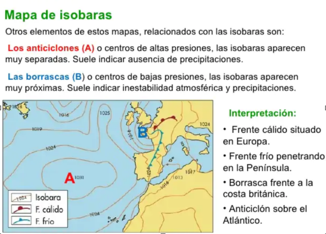
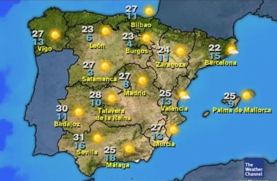
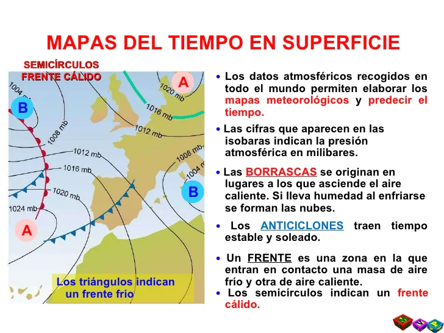

FA_UD2_Características del clima y microclima
FUNDAMENTOS AGRONÓMICOS
UD 2
CARACTERÍSTICAS DEL CLIMA Y MICROCLIMA
MAPAS METEOROLÓGICOS
Las previsiones del tiempo se logran a través de:
- Recogida de datos en el planeta: Alrededor de 10.000 estaciones meteorológicas en la Tierra, dividiéndose en globos sondas, embarcaciones y aviones de línea regular, boyas oceanográficas, satélites, etc.**
- Modelo: Potente programa informático que analiza profundamente todas las mediciones. Es capaz de generar mapas de temperatura, lluvia, presión, humedad.
- Predictores: Interpretación de los datos recogidos y los valores del modelo.
La predicción clásica no ofrece resultados fiables más allá de los 7 u 8 días. En plazos mayores se utiliza la previsión estacional que estima la tendencia en periodos lluviosos, calurosos o secos. Los mares anormalmente cálidos acaban produciendo lluvia sobre los continentes próximos, las grandes masas oceánicas tienen mucha más inercia térmica que la atmosfera siendo previsibles con varios meses de antelación. En la práctica se utilizan modelos climáticos que simulan a la vez el océano, atmósfera y los intercambios entre ambos.
INTERPRETACIÓN DE MAPAS METEOROLÓGICOS:
En un mapa del tiempo deberíamos aprender a interpretar la presión atmosférica, los vientos dirección e intensidad, la posición de los frentes, en fin saber si vamos a tener "buen tiempo ó mal tiempo", según las necesidades de nuestro trabajo.
Los mapas meteorológicos han sufrido una larga variación a lo largo de la historia, desde simples representaciones en dibujos a los actuales que se realizan con potentes ordenadores donde se hacen recreaciones de posible tiempo a venir tienen una simbología determinada para que puedan ser interpretados uniformemente. Vamos a ver unas pequeñas pautas por si queremos interpretar un mapa del tiempo. Los datos que aparecen en un mapa meteorológico típico son:
- El viento: Se desplaza desde zonas de alta presión a zonas de baja presión. La flecha con la que suele representar suele indicar la dirección desde donde sopla y la intensidad se muestra con el número de rayitas perpendiculares
 {width=50%}
{width=50%}
- Presión atmosférica: Las isobaras son las líneas que aparecen en los mapas meteorológicos, uniendo los puntos de igual presión, como líneas de contorno de las áreas de alta y baja presión. Es interesante saber que cuanto más cercanas están las isobaras, más intenso es el viento. Baja presión, significa temporal, mal tiempo y lluvia, en los mapas de isobaras veremos la B de Bajas Presiones, lo que podremos asociar intuitivamente a B de Borrasca. Altas presiones, buen tiempo y ausencia de nubes, relacionaremos la A que aparece en la línea del tiempo con lo que se podrá asociar igualmente a A Anticiclón.
{width=50%}
-
Áreas de alta y baja presión: Designadas simplemente con una A azul o una B roja en mayúsculas grandes.
-
Temperatura: A menudo se incluye la temperatura en la superficie, las cifras que indican suelen corresponderse con la máxima y mínima.
{width=50%}
-
Nubosidad: Se relaciona con la presencia de nubes o no. Como ya se ha indicado cada medio de comunicación utiliza un icono para realizar la representación gráfica de las siguientes características: Soleado, parcialmente soleado, parcialmente nublado, nublado y cubierto (la escala puede ser mayor mayormente soleado, mayormente nublado, etc.).
-
Áreas de precipitación: Hay un símbolo convencional, que es la que generalmente se usa, para cada tipo de precipitación: lluvia, llovizna, nieve, niebla, chubasco y tormenta eléctrica. Sitúan el símbolo sobre la zona geográfica donde se prevea.
-
Frentes: Los frentes fríos, son masas de aire frio, aparecen como una línea azul gruesa con flechas (triángulos) delante de ellos, indicando de ese modo la dirección en la que se mueve. Los frentes cálidos, son masas de aire caliente, son representados con una línea roja gruesa, con semicírculos a lo largo del borde que avanza, indicando el sentido en el que se desplaza. Los frentes estacionarios se representan con una línea que alterna semicírculos rojos de un lado y triángulos azules del otro y los frentes ocluidos aparecen como líneas que alternan triángulos azules y semicírculos rojos del mismo lado de la línea.
{width=50%}